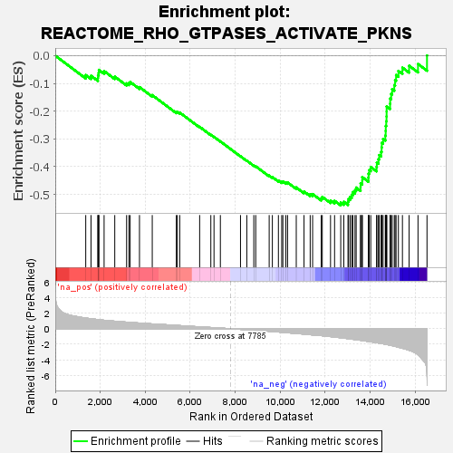
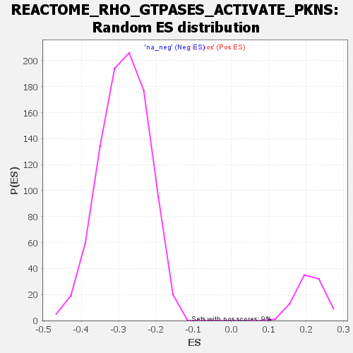

| | | Dataset | all_genes |
| Phenotype | NoPhenotypeAvailable |
| Upregulated in class | na_neg |
| GeneSet | REACTOME_RHO_GTPASES_ACTIVATE_PKNS |
| Enrichment Score (ES) | -0.5399056 |
| Normalized Enrichment Score (NES) | -1.8876848 |
| Nominal p-value | 0.0 |
| FDR q-value | 0.0031939705 |
| FWER p-Value | 0.113 |
Table: GSEA Results Summary

Fig 1: Enrichment plot: REACTOME_RHO_GTPASES_ACTIVATE_PKNS
Profile of the Running ES Score & Positions of GeneSet Members on the Rank Ordered List
| SYMBOL | RANK IN GENE LIST | RANK METRIC SCORE | RUNNING ES | CORE ENRICHMENT | | 1 | H3-3A | 1355 | 1.380 | -0.0700 | No |
| 2 | MYL6 | 1589 | 1.292 | -0.0726 | No |
| 3 | KDM1A | 1895 | 1.185 | -0.0805 | No |
| 4 | YWHAE | 1900 | 1.184 | -0.0701 | No |
| 5 | CDC25C | 1929 | 1.174 | -0.0613 | No |
| 6 | RAC1 | 1939 | 1.171 | -0.0514 | No |
| 7 | YWHAG | 2171 | 1.091 | -0.0557 | No |
| 8 | MYH10 | 2645 | 0.970 | -0.0757 | No |
| 9 | H2AZ2 | 3171 | 0.852 | -0.1000 | No |
| 10 | PPP1CB | 3274 | 0.827 | -0.0988 | No |
| 11 | YWHAB | 3329 | 0.815 | -0.0948 | No |
| 12 | YWHAQ | 3744 | 0.729 | -0.1134 | No |
| 13 | NCOA2 | 4312 | 0.622 | -0.1423 | No |
| 14 | AR | 5382 | 0.431 | -0.2034 | No |
| 15 | MYL12B | 5425 | 0.422 | -0.2022 | No |
| 16 | PKN2 | 5534 | 0.403 | -0.2052 | No |
| 17 | RHOA | 6419 | 0.242 | -0.2567 | No |
| 18 | PDPK1 | 6916 | 0.160 | -0.2855 | No |
| 19 | PPP1R12A | 7057 | 0.134 | -0.2928 | No |
| 20 | YWHAZ | 7340 | 0.085 | -0.3091 | No |
| 21 | YWHAH | 8235 | -0.081 | -0.3628 | No |
| 22 | RHOB | 8515 | -0.133 | -0.3785 | No |
| 23 | PPP1R12B | 8826 | -0.190 | -0.3957 | No |
| 24 | H2AC18 | 8912 | -0.208 | -0.3990 | No |
| 25 | H3-3B | 9510 | -0.330 | -0.4323 | No |
| 26 | H4C11 | 9651 | -0.364 | -0.4376 | No |
| 27 | PKN1 | 9920 | -0.423 | -0.4501 | No |
| 28 | RHOC | 10067 | -0.455 | -0.4549 | No |
| 29 | H4C8 | 10118 | -0.469 | -0.4537 | No |
| 30 | H4C14 | 10252 | -0.501 | -0.4573 | No |
| 31 | H2BC9 | 10328 | -0.517 | -0.4572 | No |
| 32 | H2AX | 10714 | -0.609 | -0.4752 | No |
| 33 | H4C1 | 11059 | -0.692 | -0.4899 | No |
| 34 | H2BC21 | 11333 | -0.770 | -0.4996 | No |
| 35 | H4C13 | 11441 | -0.796 | -0.4990 | No |
| 36 | SFN | 11824 | -0.890 | -0.5142 | No |
| 37 | PKN3 | 11870 | -0.902 | -0.5089 | No |
| 38 | H3C4 | 12237 | -1.014 | -0.5220 | No |
| 39 | KDM4C | 12417 | -1.072 | -0.5233 | No |
| 40 | PAK1 | 12691 | -1.165 | -0.5295 | Yes |
| 41 | H2BC12 | 12827 | -1.214 | -0.5268 | Yes |
| 42 | H4C12 | 13014 | -1.279 | -0.5266 | Yes |
| 43 | MYL9 | 13036 | -1.289 | -0.5164 | Yes |
| 44 | H2BC17 | 13107 | -1.313 | -0.5089 | Yes |
| 45 | H3C6 | 13182 | -1.345 | -0.5013 | Yes |
| 46 | H2BC14 | 13229 | -1.363 | -0.4919 | Yes |
| 47 | H2BC3 | 13325 | -1.395 | -0.4852 | Yes |
| 48 | H4C2 | 13377 | -1.412 | -0.4756 | Yes |
| 49 | H2BC13 | 13571 | -1.489 | -0.4740 | Yes |
| 50 | H2BC11 | 13574 | -1.491 | -0.4608 | Yes |
| 51 | H3C12 | 13646 | -1.524 | -0.4514 | Yes |
| 52 | H2AJ | 13647 | -1.525 | -0.4378 | Yes |
| 53 | H2BC10 | 13921 | -1.634 | -0.4397 | Yes |
| 54 | H2BC5 | 13928 | -1.637 | -0.4254 | Yes |
| 55 | H4C5 | 13957 | -1.648 | -0.4124 | Yes |
| 56 | H3C3 | 14026 | -1.683 | -0.4014 | Yes |
| 57 | H4C9 | 14285 | -1.801 | -0.4010 | Yes |
| 58 | H2BC7 | 14296 | -1.805 | -0.3854 | Yes |
| 59 | H3C7 | 14369 | -1.845 | -0.3733 | Yes |
| 60 | H3C1 | 14400 | -1.861 | -0.3584 | Yes |
| 61 | H2BC26 | 14486 | -1.895 | -0.3466 | Yes |
| 62 | H2BC4 | 14509 | -1.907 | -0.3309 | Yes |
| 63 | H3C14 | 14517 | -1.912 | -0.3142 | Yes |
| 64 | H2AC8 | 14573 | -1.939 | -0.3001 | Yes |
| 65 | H2AC7 | 14673 | -1.992 | -0.2883 | Yes |
| 66 | H3C10 | 14689 | -2.001 | -0.2713 | Yes |
| 67 | H3C11 | 14693 | -2.002 | -0.2535 | Yes |
| 68 | H2AC14 | 14713 | -2.016 | -0.2366 | Yes |
| 69 | H4C16 | 14727 | -2.025 | -0.2193 | Yes |
| 70 | H2AC4 | 14730 | -2.025 | -0.2013 | Yes |
| 71 | H4C4 | 14732 | -2.027 | -0.1832 | Yes |
| 72 | H3C2 | 14885 | -2.125 | -0.1734 | Yes |
| 73 | MYH9 | 14889 | -2.127 | -0.1545 | Yes |
| 74 | H4C3 | 14934 | -2.159 | -0.1378 | Yes |
| 75 | H2BC6 | 14976 | -2.181 | -0.1208 | Yes |
| 76 | H2AC19 | 15071 | -2.247 | -0.1064 | Yes |
| 77 | H2BC15 | 15107 | -2.270 | -0.0882 | Yes |
| 78 | H3C13 | 15151 | -2.304 | -0.0701 | Yes |
| 79 | H2AC20 | 15254 | -2.386 | -0.0550 | Yes |
| 80 | H2BC8 | 15434 | -2.515 | -0.0433 | Yes |
| 81 | H2AC6 | 15731 | -2.781 | -0.0364 | Yes |
| 82 | MYH14 | 16126 | -3.370 | -0.0301 | Yes |
| 83 | H3C8 | 16526 | -6.120 | 0.0004 | Yes |
Table: GSEA details [plain text format]

Fig 2: REACTOME_RHO_GTPASES_ACTIVATE_PKNS: Random ES distribution
Gene set null distribution of ES for REACTOME_RHO_GTPASES_ACTIVATE_PKNS